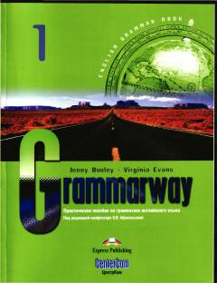

G1Ingliz tili grammatikasini boshlang'ich bosqichda o'rganish uchun amaliy qo'llanma.
Ushbu qo'llanma ingliz tili grammatikasini o'rganish uchun mo'ljallangan bo'lib, asosiy qoidalarni tushunarli tushuntirishlar va amaliy mashqlar orqali o'rgatadi. Kitobda boshlang'ich darajadagilar uchun zarur bo'lgan mavzular qamrab olingan va mustaqil ishlash uchun javoblar ilova qilingan.